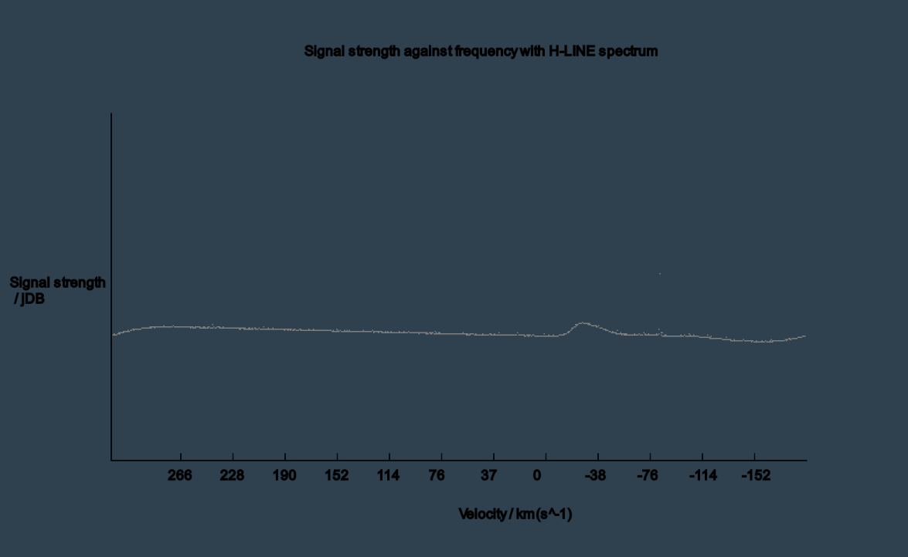

Hydrogen Line Telescope
From late 2020 I've been working on a homemade radio telescope intended to detect 21cm Hydrogen line emissions from the milky way and potentially other celestial sources. 21cm emissions are radio emissions at a similar frequency to Wifi and are caused when an electron orbiting a hydrogen atom spontaneously flips its spin to a lower energy state, causing the energy to be emitted as a photon of frequency 1.4ghz and therefore wavelength 21cm. I went through a few different designs, looking at horn antennas, satellite dish antennas and wifi antennas. My first design used an old satellite dish where I'd put a paint can in place of the LNB and wired it up to an amplifier and SDR, but I could not get any success due to design flaws with the paint can initially, and once I'd fixed those, software problems. Due to mis-diagnosing the issue, I changed the design to a different dish with a different feed designed for wifi reception but accidently fixed the software in the process, allowing this new design to pick up the signal of hydrogen emissions in the local galaxy. I can point the telescope at different ends of the galaxy and see doppler shift between different spiral arms and would like to try to create a velocity curve to replicate the famous experiments that found dark matter.

My second telescope (first working).

A plot of hydrogen line data that has been redshifted by an equivilant to 20km/s.
The small hump is the HL photons, the slight dip that looks like an inflection point is telescope noise.
The awfullness of the scale on that graph is due to floating point issues (0 is actually 0.49 etc).